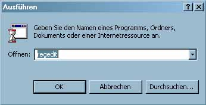
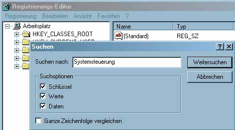
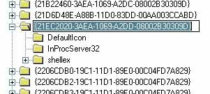
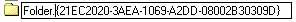
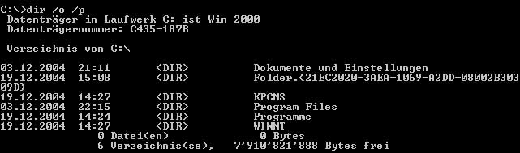

Windows 2000: Verzeichnis mittels CLSID "verstecken"
Schritt 1: Registry Editor
("regedit") öffnen.

Schritt 2: Nach
"Systemsteuerung" suchen.

Schritt 3: Die CLSID der Systemsteuerung kopieren.

Schritt 4: Die CLSID dem zu versteckenden Verzeichnis anfügen (getrennt durch
'.').

Schritt 5: Das Verzeichnis erscheint nun als Systemsteuerung.
Schritt 6-1: In der Kommandozeile ist die CLSID nach wie vor ersichtlich.

Schritt 6-2: In der Kommandozeile kann der Vorgang auch rückgängig gemacht werden.